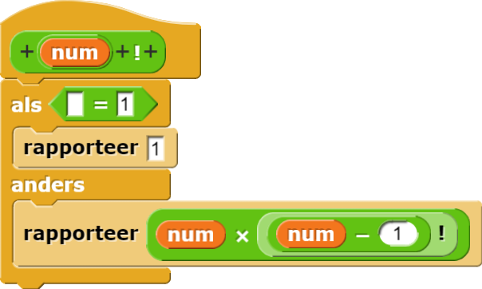

Recursieve Mondriaan
Recursie is niet alleen van toepassing in fractalen…
- Ga op zoek naar de Nederlandse schilder Mondriaan om voorbeelden van zijn kunstwerken te bekijken.
Mondriaan gebruikte geen computer, maar we kunnen met behulp van recursie zijn schilderijen
modelleren. Dit kunnen we ook voor vergelijkbare afbeeldingen doen:
De hoeken van de buitenrand zijn afwezig. Dit gebeurt als je "Flat lines" in het
instellingen-menu kiest
 en, zoals we in in dit project hebben gedaan, een grote pen dikte kiest. In andere projecten zul je deze
instelling waarschijnlijk willen terug veranderen.
en, zoals we in in dit project hebben gedaan, een grote pen dikte kiest. In andere projecten zul je deze
instelling waarschijnlijk willen terug veranderen.
en, zoals we in in dit project hebben gedaan, een grote pen dikte kiest. In andere projecten zul je deze
instelling waarschijnlijk willen terug veranderen.
-


Sommige blokken zijn al voor je gemaakt en het script datMondriaanaanroept is al klaargezet. -
Maak eerst het programma voor de base case af, het
rechthoekblok. Gebruik een gekleurde lijn met de breedte van de rechthoek als pengrootte om de binnenkant te verven en maak dan de zwarte rand. Behoud staat-transparantie.Hetrechthoekblok bevat al twee aangepaste blokken die je kunt gebruiken. Kijk in de code van deze aangepaste blokken hoe deze blokken werken. - Druk een paar keer op "r" om er zeker van te zijn dat je je
rechthoekgoed hebt gemaakt. Na iedere keer drukken op "r" moet je een grote rechthoek krijgen waarin de binnenkant één van de vijf kleuren heeft waarbij de rand zwart is, bijvoorbeeld:

-
 Programmeer dan de code voor het recursieve geval. Het
Programmeer dan de code voor het recursieve geval. Het Mondriaanblok bevat al wat structuur. Het is aan jou om uit te vinden welke invoer het nodig heeft gebaseerd op hoe je script moet werken.-
Je hebt niveau 1 al gezien, een ingevulde rechthoek. Op ieder nivea verdeelt
Mondriaande ruimte die het bevat in twee rechthoeken (die weer verder zullen verdelen als er meer niveau's nodig zijn.) Op level 2 bijvoorbeeld zalMondriaanhet gebied dat bepaald is door de breedte en hoogteinvoeren verdelen in twee stukken. Daarna zal het eenrechthoektekenen in ieder stuk. Bij niveau 3 gebruiktMondriaaneenMondriaanvan niveau 2 om de ruimte te verdelen in twee kleinere rechthoeken (voor in totaal vier ingevulde rechthoeken). Niveau 4 zal weer verdelen voor 8 rechthoeken etcetera. - De breuk variabele zal een willekeurige breuk tussen 1/5 and 4/5 bevatten, die bepaalt hoe het gebied verdeelt moet worden op dit niveau.
- Het algoritme bepaalt of het moet delen door de breedte of door de hoogte.
-
Je hebt niveau 1 al gezien, een ingevulde rechthoek. Op ieder nivea verdeelt
-
Klik een aantal keer op "spatie". Als je
Mondriaanwerkt zal het afbeeldingen zoals hieronder moeten produceren:

-
Recursie is niet alleen voor commando's. Je zal leren over recursieve rapporteurs
in Hoofdstuk 8. Dit blok rapporteert bijvoorbeeld de faculteit van een getal. Zie je hoe het werkt?
